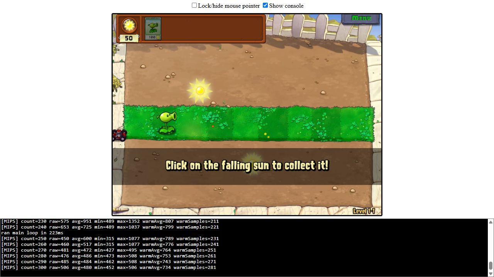

Plants vs. Zombies
A edição GOTY original do seu PC, emulada no navegador. Sem Steam.
A primeira abertura baixa cerca de 150 MB e pode levar alguns minutos para carregar. Use um computador com Chrome ou Edge. Na tela inicial, clique em Click to Start.

Controles e progresso
Use o mouse para selecionar sementes, plantar e recolher sóis. O teclado funciona nos campos de nome. Deixe a opção de prender o ponteiro desmarcada.
O emulador está configurado para armazenar os dados neste navegador. A recuperação do progresso após fechar a página ainda não foi verificada. Os saves da instalação do Windows não são importados.
Som, celular e todas as fases ainda não foram validados.